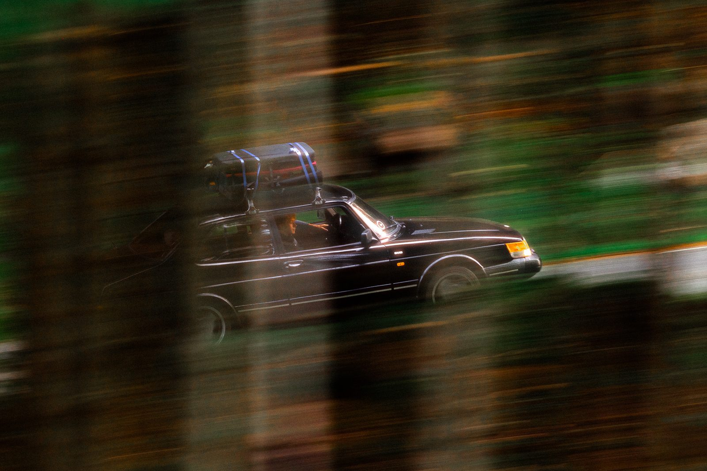
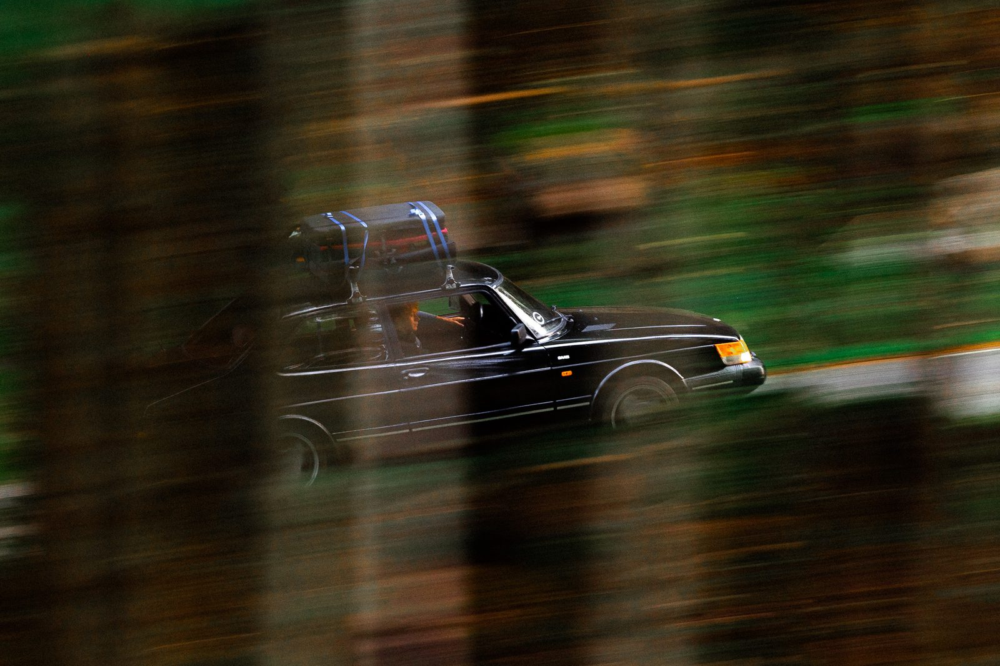

Light enters the emulsion.
A colour negative is three light-sensitive layers stacked on a clear base. Blue is recorded on top, then a yellow filter stops any remaining blue from going deeper. Green and red pass on.
Halo Pro 1.0 · macOS · Apple Silicon
Halo Pro rebuilds what happens behind the emulsion — light reaching the back of the film base, reflecting, and exposing the red layer a second time. Computed in 32-bit float, on your Mac.
Halation isn't a glow added on top of a photo. It's a second exposure, made from behind, by light that already passed through. Five steps, a few hundredths of a millimetre.
A colour negative is three light-sensitive layers stacked on a clear base. Blue is recorded on top, then a yellow filter stops any remaining blue from going deeper. Green and red pass on.
A bright source has more light than the emulsion can absorb. What's left scatters at the bottom of the red layer and travels on — at every angle — into roughly 0.13 mm of clear plastic.
Where the base meets air, light steeper than the critical angle — about 42° for n ≈ 1.5 — can't get out. It's totally reflected, straight back up. Shallower light mostly escapes. This boundary is where halation is born.
The returning light enters the emulsion from below, and the first layer it meets is the red-sensitive one. It lands in a ring around the source, at a distance set by the base thickness. Only the strongest light makes it further, into green — which pushes the hottest cores toward orange.
Still film has an anti-halation layer that soaks up most of it. Motion-picture stock uses remjet — a carbon-black coat on the back of the base. Strip the remjet, as Cinestill does, and the mirror is back at full strength. Flip the switch under the diagram.
Ring radius from base thickness t and critical angle θc.
≈ 2 · 0.13 · 0.89 ≈ 0.23 mmFractions of a millimetre on the film — visible because the source is so much brighter than its surroundings.
How far the light travels sideways is set by the base, not by the picture. Put the same film in a bigger camera and the halo stays the same physical size while the frame grows around it. It's why 35 mm glows and large format barely does.
Frames to scale · halo enlarged for visibility, identical in all three
Halo Pro sets Spread as a percentage of the image's short side, so a look travels with the picture at any resolution. Emulating a format? Scale the spread by the frame:
Digital files, one halation pass each — no mist, no LUT, no grain. Watch the highlights, not the frame.


Before Halo ProNo single "amount" slider. Each stage of the light path has its own handle, named in plain words, with the physics in the tooltip. Simple mode shows the first four; Advanced shows the rest.
Most light is absorbed on the way down. Only highlights have enough left to reach the base and come back.
Decides which pixels are sources, and how soft that cut is.
Set by base thickness and angle — a property of the film stock.
A percentage of the frame, so it scales with the image. Type any value.
Faint returns expose red alone. Strong ones reach green too and read as orange.
The glow starts at the base colour and shifts toward the target in the hottest areas.
Where the emulsion is already fully exposed, extra light changes nothing.
Holds pure whites as whites instead of tinting them.
The same glow on a bright sky is there but invisible.
Luminance range, sky protection, colour mask — put the halo where the scene earns it.
A wider, fainter spread under the main ring.
A second halo layer with its own size and strength.
A mist filter scatters light in front of the lens, softening contrast everywhere — a different mechanism, so a different tool.
Density, spread, tint and turbulence, with its own threshold.
The glow falls from a bright core to nothing over hundreds of pixels. Round that to 8 bits between blur passes and the falloff turns into steps. Halo Pro keeps every stage in 32-bit float — and values above white survive until export.
To be straight about it: your screen is 8-bit, so a true 8-bit-vs-float comparison would look identical here. The left side is cut to far fewer levels to show the shape of the problem. In real files it shows up as faint rings in dark falloffs — and it compounds each time a tool rounds between steps. Float also means you can add halation anywhere in the edit, not only at the end.
Same engine, different intentions. Knowing which one you want saves an hour of slider wandering.
Digital files that sit next to your scans without looking like strangers. Small spread, warm dye, roll-off on. Nobody should notice the effect — only that the light feels right.
Headlights in rain, sun through trees, a window behind someone. Halation where the scene earns it, not across the frame.
Dye colours no film ever had, glows the size of the frame, directional smear, turbulent mist on a reseeded pattern.
Every value label in the app is clickable. Type a number, press Enter, and it's applied — even far outside the slider's range. The slider parks at its end; the value keeps going.
Drag, or click the number and type 340.
Lightroom Classic round-trip. The processed file lands next to the original.
Up to 500 images. Apply to All, Export All, in the background.
TIFF and PNG read at full depth. JPEG too.
TIFF 8 / 16 / 32f, PNG 8 / 16, JPEG.
sRGB, Adobe RGB, ProPhoto. ICC embedded on export.
EXIF, IPTC and XMP carried over with a bundled ExifTool.
.cube LUTs on either side of the effect, with intensity.
M1–M5, macOS 12+. Metal GPU. Notarized by Apple.
The free version is the real app — every slider, no watermark, no time limit. Paying adds the Lightroom plug-in and batch, and keeps the project going.
€0personal
€20once, or more
€60once, or more
Halo Pro is made by one person — a photographer who wanted halation that behaved like the real thing. Twenty euros is about a roll of film and the lab fee. It pays for the Apple developer account, notarization, and the evenings that go into the next update. It's Mac and Apple Silicon only for now. If you hit a bug, the in-app report attaches the log, and I read every one.